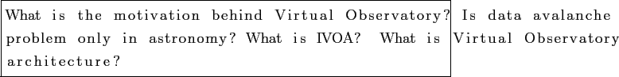

Next:
Data avalanche: Opportunity or
Up:
Virtual Observatory
Previous:
Introduction
Contents
Virtual Observatory (VO)

Subsections
Data avalanche: Opportunity or disaster?
International Virtual Observatory Alliance (IVOA)
Architecture
VOResources
Data Access Protocols
Cone Search Protocol
Simple Image Access Protocol
Simple Spectra Access Protocol
Data Formats
VOTable
Motivation
Structure
Tools and libraries
Examples
FITS
Motivation
Structure
Examples
Astar Seran 2011-04-01